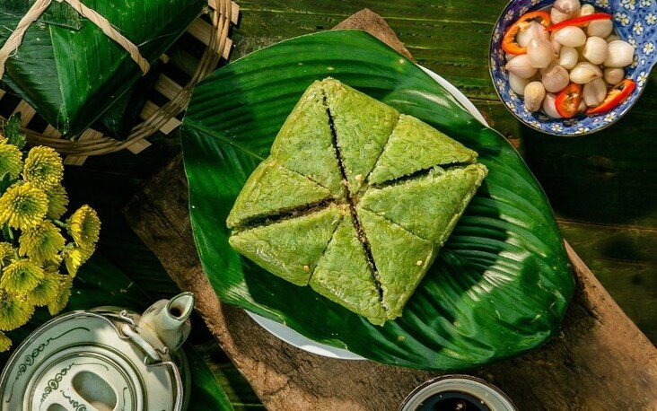
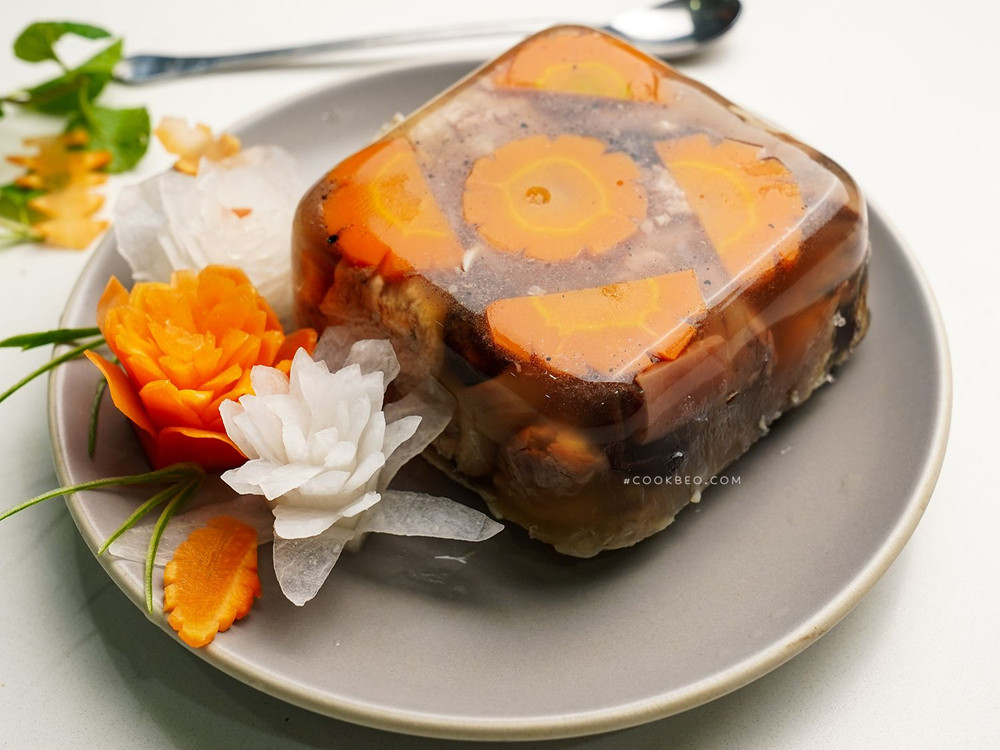
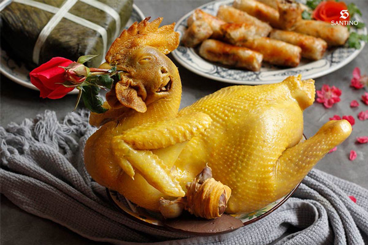

Tết Nguyên Đán có nguồn gốc từ nền văn minh nông nghiệp lúa nước của người Việt, gắn liền với chu kỳ canh tác và tín ngưỡng dân gian. Đây là dịp sum vầy gia đình, tưởng nhớ tổ tiên và đón chào năm mới với hy vọng may mắn, bình an
  
Một mùa Xuân mới - Xuân Ất Tỵ đã đến, mang theo niềm vui, hy vọng và những ước mơ tốt đẹp. Trong thời khắc thiêng liêng chuyển giao năm mới, thay mặt lãnh đạo Đảng, Nhà nước, Tôi thân ái gửi tới toàn thể đồng bào, đồng chí, chiến sỹ cả nước và đồng bào ta ở nước ngoài lời chúc mừng năm mới tốt đẹp nhất. Tôi cũng trân trọng gửi tới bạn bè, nhân dân các nước trên thế giới lời chúc năm mới hòa bình, hạnh phúc, hữu nghị và phát triển.
Vui vẻ Tạm được Nhàm chán